Subbasis einer Initialtopologie
 eine
eine 2. Beweis
2.1. Basis
Sei  stetig, so gilt für eine offene Menge 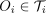, dass das Urbild 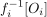 ebenfalls offen ist.
Zu den Bedingungen für eine Basis einer Topologie:
Es gilt , d.h. 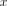 ist offen in der induzierten topologie.
Ferner gilt nach Konstruktion, dass der endliche Durchschnitt enthalten ist, und damit insbesondere auch eine Vereinigung
stetig, so gilt für eine offene Menge 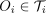, dass das Urbild 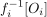 ebenfalls offen ist.
Zu den Bedingungen für eine Basis einer Topologie:
Es gilt , d.h. 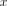 ist offen in der induzierten topologie.
Ferner gilt nach Konstruktion, dass der endliche Durchschnitt enthalten ist, und damit insbesondere auch eine Vereinigung
2.2. Subbasis
folgt aus der Definition, da eine Basis als Subbasis
2.3. universelle Eigenschaft
Sei 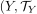 eine Topologie und 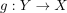 eine Abbildung:
Falls  stetig ist, folgt aus der Komposition stetiger Abbildungen, dass 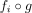 stetig ist.
Sei stetig, so zeigen wir nach der Aussage, dass das Urbild der Subbasis offen ist.
Sei 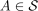, d.h. 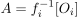 für ein offenes 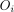, dann folgt
stetig ist, folgt aus der Komposition stetiger Abbildungen, dass 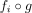 stetig ist.
Sei stetig, so zeigen wir nach der Aussage, dass das Urbild der Subbasis offen ist.
Sei 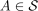, d.h. 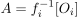 für ein offenes 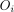, dann folgt
Wegen der stetigkeit von folgt damit, dass 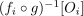 und damit auch 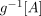 offen ist, d.h. ist stetig
2.4. wohldefiniert
folgt aus dem axiom schema of specification